1) Motivação e Setup
O Relato 15 mostrou que o clustering global sobre todas as 16.670 funções IIO produz grupos difusos: misturar operações diferentes no mesmo espaço semântico recupera o tipo de operação, não o estilo de implementação. A hipótese deste relato é que clusters interpretáveis emergem apenas quando a análise é restrita a uma única operação, onde toda a variação capturada reflete escolhas de design.
Foram analisadas as duas operações mais representativas: read_raw
(762 implementações) e write_raw (449 implementações).
Pipeline para cada operação:
- Embeddings UniXcoder de 768 dimensões;
- UMAP 2D (visualização) e UMAP 10D (entrada para clustering);
- K-Means com seleção de k via silhouette score;
- HDBSCAN para validação baseada em densidade.
2) read_raw (n = 762)
Tanto o K-Means (melhor k = 2, silhouette = 0,5231) quanto o HDBSCAN (2 clusters, 1,2% de ruído) convergem independentemente para a mesma partição binária, com o silhouette mais alto de toda a análise.
| Cluster | n | Função representativa | Subsistema | Sim. léxica | Sim. emb. |
|---|---|---|---|---|---|
| C0 | 633 (83%) | vf610_read_raw |
adc | 0,1077 | 0,7787 |
| C1 | 129 (17%) | scd4x_read_raw |
chemical | 0,1299 | 0,7727 |
A leitura das colunas de similaridade inverte a intuição inicial: a similaridade léxica é muito baixa (~0,11) mas a similaridade de embedding é muito alta (~0,78). Isso é a assinatura de uma interface de kernel bem especificada: o contrato da API é compartilhado (mesma estrutura, mesmos valores de retorno IIO) enquanto nomes de registrador e identificadores específicos do hardware divergem completamente.
2.1) Estrutura UMAP
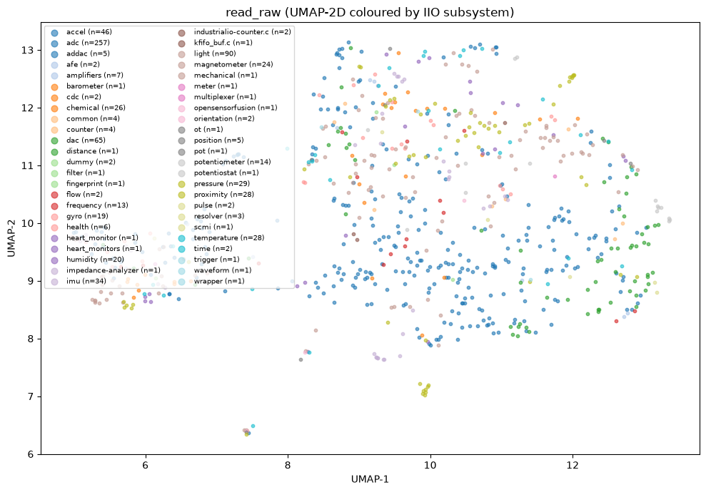
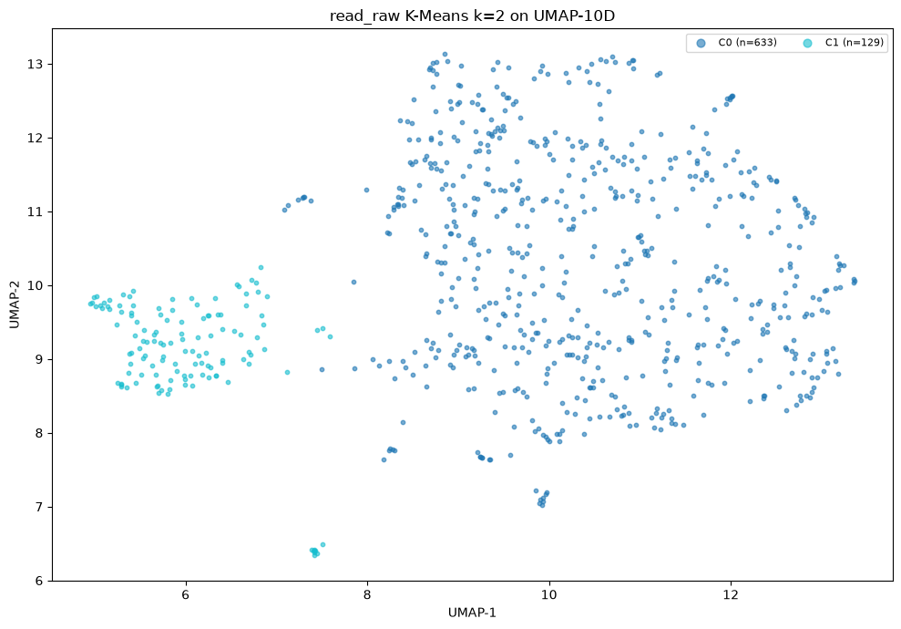
No nível semântico, implementações de read_raw de subsistemas diferentes
são mais parecidas entre si do que diferentes, é o estilo de implementação,
não o domínio do sensor, o principal eixo de variação. O K-Means com k=2 no espaço 10D
separa C1 como um satélite espacialmente isolado, e a separação é visualmente limpa.
2.2) K-Means
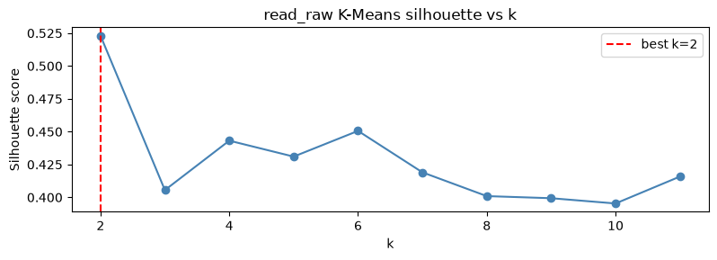
O pico em k=2 (silhouette = 0,5231) é agudo e inequívoco: o score cai imediatamente e nunca se recupera, formando um platô monotonicamente declinante em torno de 0,40 para k=3-11. Isso é evidência forte de que dois é o número natural de grupos, não um artefato de parar cedo. Valores acima de 0,50 em dados de embedding de código indicam separação genuína, não superficial.
2.3) HDBSCAN
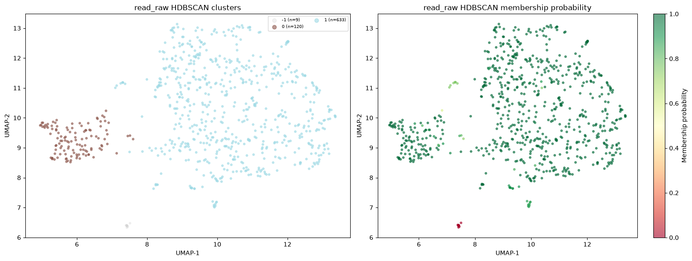
O HDBSCAN confirma k=2 com apenas 9 pontos de ruído (1,2%), todos na região de fronteira entre os dois clusters no espaço UMAP. As probabilidades de pertencimento são quase uniformemente altas em toda a visualização, com apenas alguns pontos transicionais nas bordas dos clusters.
2.4) Composição por Subsistema
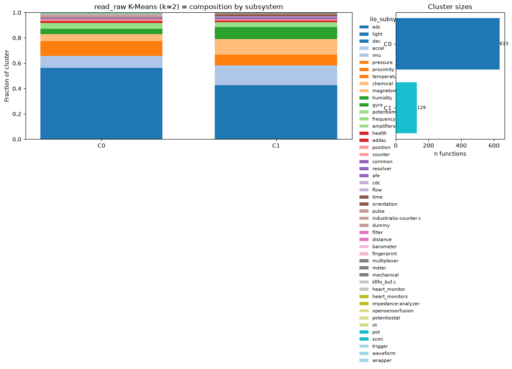
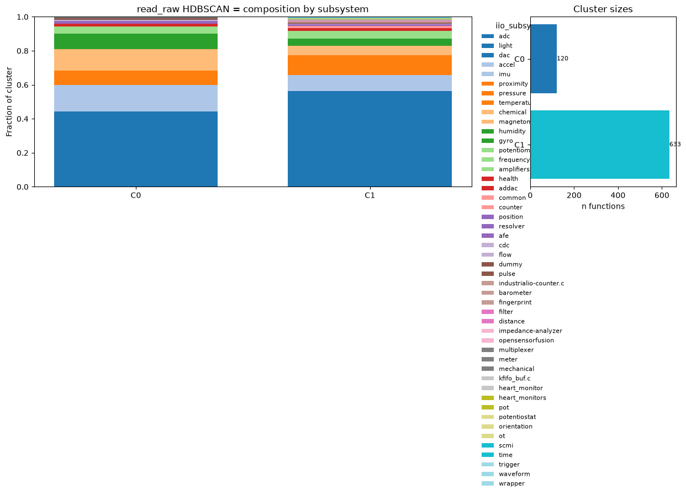
A composição por subsistema valida a interpretação semântica:
-
C0: Padrão ADC canônico (83%). Funções seguem a estrutura IIO
estabelecida:
iio_device_claim_direct_mode, despacho pormaskviaswitch, tratamento deIIO_CHAN_INFO_RAW,IIO_CHAN_INFO_SCALEeIIO_CHAN_INFO_SAMP_FREQ, release de direct mode. É o idioma consolidado de ADCs e da maioria dos drivers de sensores simples. -
C1: Leitura pesada de protocolo (17%). Funções com lógica mais
elaborada:
mutex_lockexplícito em torno de transações I2C/SPI, conversão big-endian (be16_to_cpu), helpers separados de despacho de canal. Sensores químicos (CO₂, umidade), de proximidade e de temperatura dominam este cluster, pois suas medições exigem interações multi-etapa com o hardware em vez de uma única leitura de registrador.
2.5) Similaridade Intra e Inter-cluster
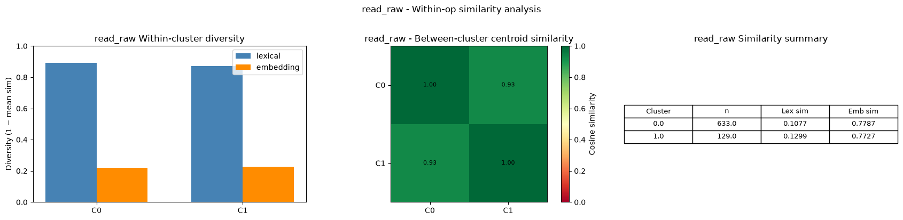
O padrão de similaridade confirma a assinatura de interface bem especificada: funções dentro de cada cluster têm alta similaridade semântica (~0,78) mas baixíssima similaridade léxica (~0,11). O contrato da API é compartilhado enquanto os detalhes específicos de hardware divergem completamente.
O número mais importante desta análise é a similaridade entre centroides dos dois clusters: 0,93. Os dois clusters são quase indistinguíveis ao nível dos centroides; o modelo UniXcoder os vê como tipos semânticos quase idênticos. A separação capturada em k=2 é um fork estilístico sutil mas real, não uma diferença fundamental de função. Isso é consistente com ambos os grupos implementando o mesmo contrato IIO, apenas com estratégias distintas de interação com o hardware.
2.6) Autores e Tendência Temporal
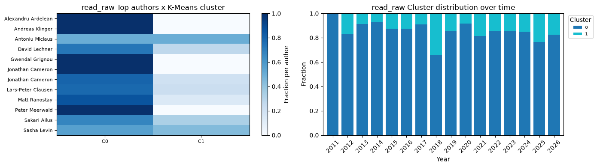
A maioria dos autores prolíficos contribui para ambos os clusters, mas alguns mostram preferências de estilo claras: Alexandru Ardelean, Peter Meerwald e Andreas Klinger concentram-se fortemente em C0; Gwendal Grignou escreve quase exclusivamente no estilo C1. O gráfico temporal mostra C0 dominante ao longo de todo o período 2011-2026, com C1 contribuindo uma fração estável de ~10-15% por ano. Não há tendência de deriva ou convergência: os dois estilos coexistem em equilíbrio estável.
3) write_raw (n = 449)
O K-Means seleciona k=5 (silhouette = 0,4768); o HDBSCAN encontra 3 clusters com 0% de ruído, ou seja, toda função se encaixa limpo em algum grupo. A discrepância (5 vs. 3) tem explicação clara: os dois clusters isolados (C0 e C2 do K-Means) são detectados como grupos separados por ambos os algoritmos; o HDBSCAN agrupa a nuvem principal como um único cluster enquanto o K-Means a subdivide em três pela geometria de centroides.
| Cluster | n | Função representativa | Subsistema | Sim. léxica | Sim. emb. | Caráter |
|---|---|---|---|---|---|---|
| C0 | 14 | als_write_raw |
light (HID) | 0,3687 | 0,8908 | Boilerplate HID, mais compacto |
| C1 | 113 | apds9306_write_raw |
light | 0,1684 | 0,7374 | Despacho moderno, diversidade padrão |
| C2 | 16 | ad7793_write_raw |
adc | 0,4139 | 0,8435 | Wrapper fino, segundo mais compacto |
| C3 | 99 | ad5064_write_raw |
dac | 0,1639 | 0,7147 | DAC escrita direta |
| C4 | 207 | mcp4728_write_raw |
dac | 0,1020 | 0,7369 | DAC geral, mais lexicamente diverso |
3.1) Estrutura UMAP
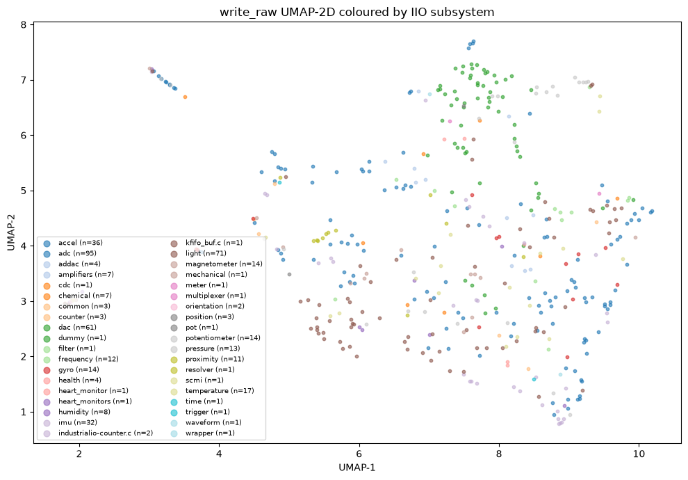
write_raw: dois clusters pequenos visivelmente isolados
(canto inferior-esquerdo e superior-esquerdo) mais uma nuvem difusa principal.
Drivers DAC (verde) concentram-se no canto superior-direito da nuvem.
O espaço UMAP de write_raw é visivelmente mais fragmentado do que o de
read_raw: dois clusters pequenos claramente isolados emergem antes mesmo
do clustering. Um situa-se no canto inferior-esquerdo (UMAP-1 ~1,8-2,0, UMAP-2 ~2,8-3,2)
e outro no canto superior-esquerdo (UMAP-1 ~2,8-3,5, UMAP-2 ~6,8-7,2), separados da
nuvem principal. Drivers DAC tendem a se aglomerar no canto superior-direito; sensores
de luz ocupam o meio-esquerdo. Mais estrutura é visível aqui do que em read_raw
mesmo sem clustering.
3.2) K-Means
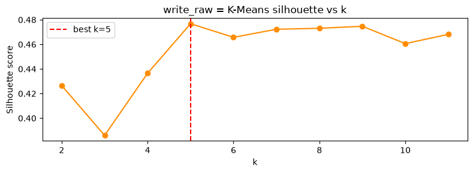
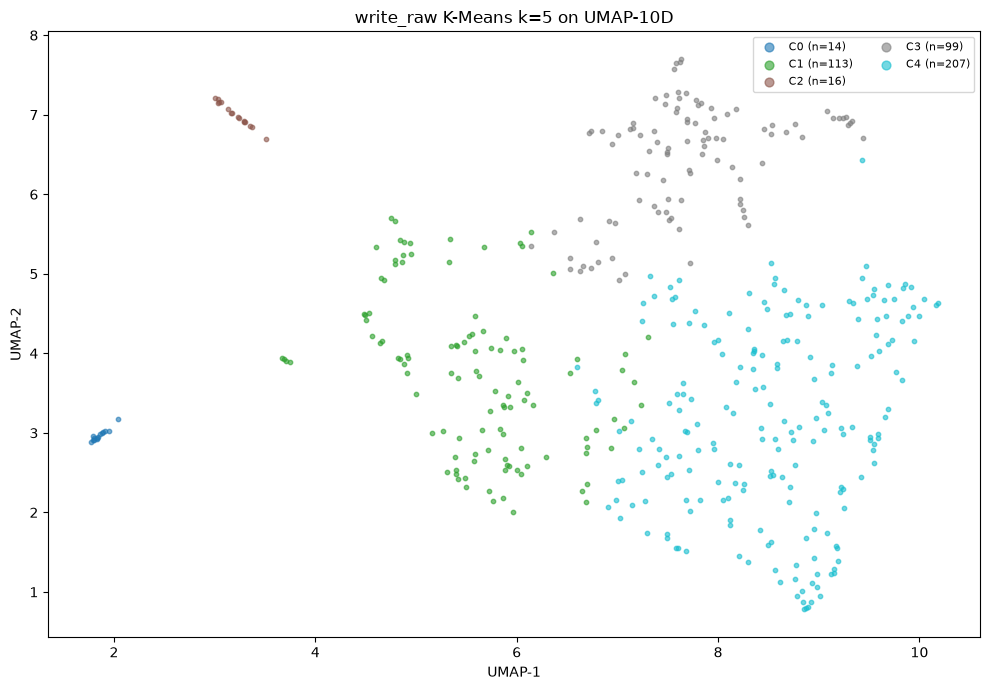
A curva de silhouette é mais plana do que a de read_raw.
O melhor k=5 (0,4768) é um pico modesto; o platô entre k=5-9 permanece acima de 0,46,
com queda em k=3 (0,386) e k=10. O platô plano sinaliza que estrutura genuína existe
na faixa de 5-9, mas as fronteiras entre os sub-clusters da nuvem principal são mais
suaves do que a separação dos dois clusters isolados.
A sobreposição entre C1 e C3 explica por que o HDBSCAN os funde num único cluster de densidade.
3.3) HDBSCAN
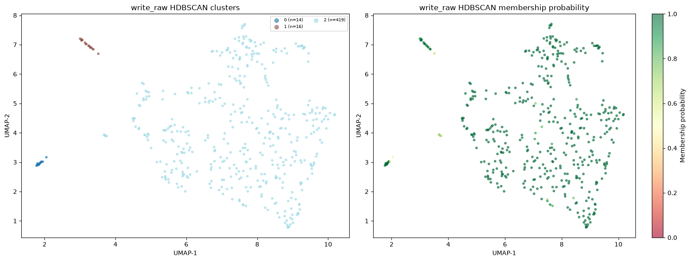
O HDBSCAN identifica os mesmos dois grupos isolados como clusters independentes e funde toda a nuvem principal em um único cluster (C2=419). Esse é o achado-chave do HDBSCAN: a estrutura interna da nuvem (C1/C3/C4 do K-Means) não é separada por densidade; os três grupos K-Means compartilham regiões de densidade sobrepostas e só podem ser distinguidos por geometria de centroides.
3.4) Composição por Subsistema
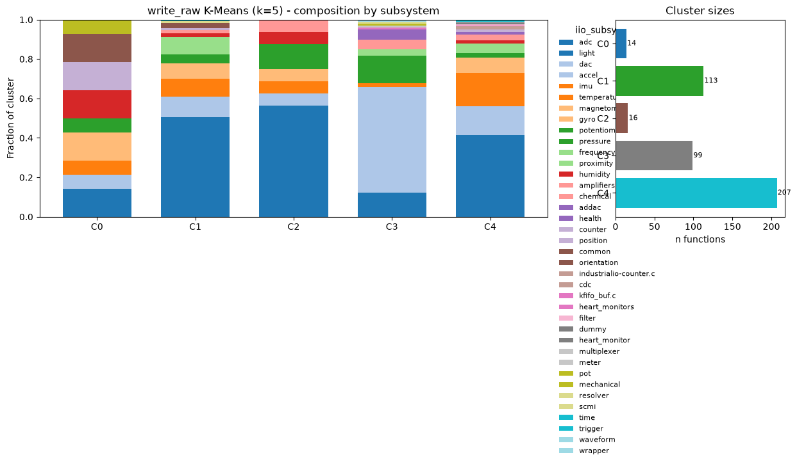
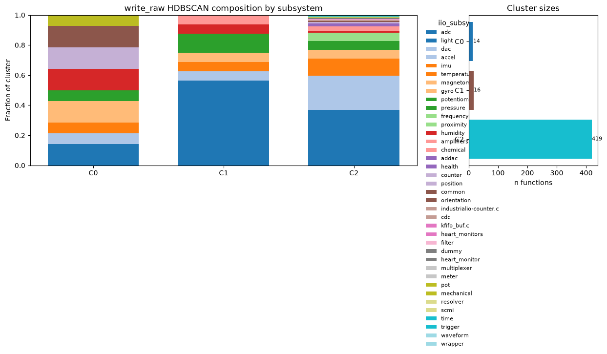
Os cinco clusters capturam padrões arquiteturais distintos de escrita:
-
C0: Boilerplate HID (n=14). A maior similaridade de embedding de
toda a análise (0,8908). Drivers de sensores HID delegam diretamente
para helpers de framework (
hid_sensor_write_samp_freq_value,hid_sensor_write_raw_hyst_value). Implementações quase idênticas em estrutura, com umswitchfino de dois ou três casos chamando a mesma API de framework. -
C1: Despacho moderno com guard (n=113). Funções que usam o idioma
guard(mutex)de escopo moderno e despacham para funções setter dedicadas por atributo (_intg_time_set,_scale_set,_sampling_freq_set). Comum em sensores de luz e proximidade recentes. -
C2: Wrapper fino / escrita diferida (n=16). Segunda maior
similaridade de embedding (0,8435). Funções mínimas: claim direct mode, chamar um
helper interno
__write_raw, release direct mode. Padrão de indireção típico de drivers ADC antigos onde a lógica de escrita vive em função separada com lock próprio. -
C3: DAC com escrita direta (n=99). Drivers DAC que validam o range
do valor e escrevem diretamente no hardware
(
ad5064_write,_cmd_write_input_n_update_n). Mantêm cache de valores de saída DAC e os atualizam sincronamente. Padrão dominante de 2013-2020, em declínio desde então. -
C4: DAC com staging de canal (n=207, maior). O cluster maior e
lexicamente mais diverso. Drivers DAC que armazenam o novo valor numa estrutura de
canal e chamam uma função de commit programático (
_program_channel_cfg). A separação entre staging de valor e aplicação ao hardware é o padrão distintivo. Dominante nos patches recentes de 2022-2026.
3.5) Similaridade Intra e Inter-cluster
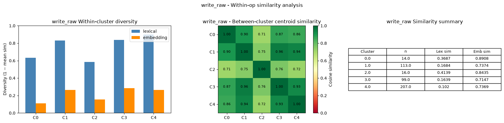
write_raw. C0 e C2
têm as distribuições mais estreitas e deslocadas à direita, ilhas de boilerplate.
O heatmap de centroides mostra C2 como o mais semanticamente distinto de todos.
C0 e C2 se destacam com as maiores similaridades de embedding (0,89 e 0,84); funções dentro deles são quase cópias semânticas. Estas são as verdadeiras ilhas de boilerplate. C3 tem a menor similaridade interna (0,71), refletindo variação entre diferentes ICs DAC dentro do mesmo padrão arquitetural.
O heatmap de centroides inter-cluster revela que C2 (wrapper fino)
é o cluster semanticamente mais distinto, com as menores similaridades cruzadas
(0,71-0,76 contra todos os outros). O padrão
claim_direct_mode → call_internal → release é genuinamente diferente
dos demais estilos de write_raw. Os três clusters da nuvem principal
(C1/C3/C4) são muito similares entre si (0,93-0,96), o que explica por que o HDBSCAN
os funde.
3.6) Autores e Tendência Temporal
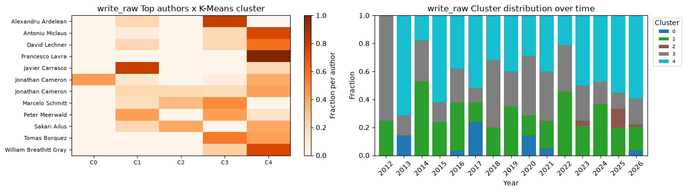
A identidade do autor correlaciona com o cluster em write_raw de forma
mais pronunciada do que em read_raw:
- Jonathan Cameron concentra-se em C1 (despacho moderno com guard);
- Javier Carrasco escreve exclusivamente em C2 (wrappers finos);
- Peter Meerwald favorece fortemente C3 (DAC escrita direta);
- William Breathitt Gray concentra-se em C4 (DAC com staging).
Isso sugere que preferências individuais de codificação, como estilo de mutex e profundidade de delegação, são um dos fatores da estrutura de clusters, capturado pelos embeddings. A tendência temporal é igualmente informativa: C4 é o cluster de crescimento dominante desde 2013 e hoje representa a maioria das contribuições recentes (2022-2026); C3 estava proeminente em 2013-2020 mas está em declínio; C0 aparece principalmente em 2013-2014, um padrão historicamente delimitado ao período de adição dos drivers HID IIO.
4) Comparativo e Síntese
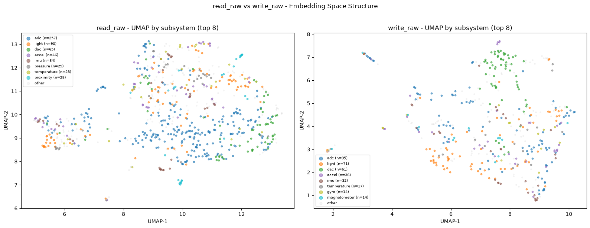
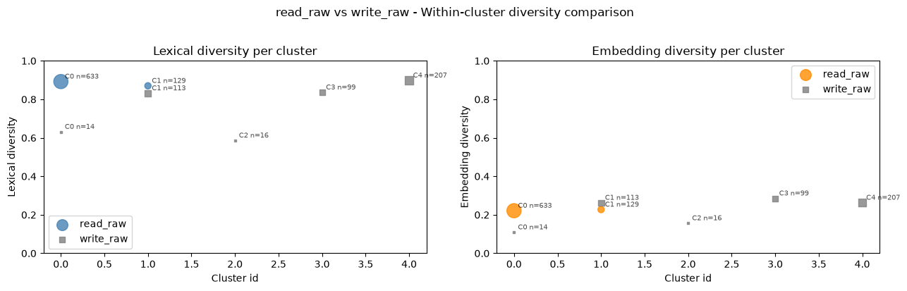
write_raw) aparecem no canto de baixa diversidade léxica e
alta semântica; os demais convergem na região de alta léxica / moderada semântica.
| Métrica | read_raw |
write_raw |
|---|---|---|
| n funções | 762 | 449 |
| K-Means k (melhor) | 2 | 5 |
| K-Means silhouette | 0,5231 | 0,4768 |
| HDBSCAN clusters | 2 | 3 |
| HDBSCAN ruído | 1,2% | 0,0% |
| Sim. entre centroides | 0,93 | 0,71-0,96 |
| Acoplamento autor-cluster | Fraco | Forte |
Cinco conclusões cruzadas emergem:
-
read_rawtem um estilo dominante e um estilo minoritário. A divisão 83%/17% é estável ao longo do tempo e entre autores. A alta similaridade entre centroides (0,93) indica que ambos os grupos fazem fundamentalmente a mesma coisa; o split captura um gradiente (leitura simples de registrador vs. leitura pesada de protocolo), não uma diferença categórica. -
write_rawse fragmenta em mais estilos. Reflete a diversidade do que está sendo escrito: frequência, escala, offset, valor bruto DAC, mais idiomas específicos de subsistema. Cinco clusters capturam variação real, não ruído. -
O framework HID cria o código mais estereotipado do dataset. C0
(emb sim = 0,89): drivers usando helpers
hid_sensor_*produzem implementações dewrite_rawquase idênticas, consequência direta da abstração do framework. É uma ilha de boilerplate delimitada historicamente (2013-2014). -
Identidade do autor correlaciona com cluster em
write_raw. Jonathan Cameron (guard moderno), Javier Carrasco (wrapper fino), Peter Meerwald (DAC direto) e William Breathitt Gray (DAC com staging) escrevem cada um predominantemente em seu cluster, o que revela preferências idiomáticas individuais detectáveis pelos embeddings. -
C4 de
write_rawé a direção futura. Sua dominância crescente em 2022-2026 e grande tamanho (n=207) indicam que representa o padrão atual de facto: writes DAC com staging de canal e função de commit. Já C3 (escritas síncronas diretas) é um padrão mais antigo em declínio.
5) Conclusão
Essa fase da disciplina foi interessante para desenvolver um pouco da minha pesquisa de tese, aplicando conhecimentos de ciência de dados num contexto que já conheço do Ciclo Kernel Linux. Consegui ir de um dataset bruto de patches até clusters com semântica interpretável, o que não era óbvio que seria possível quando comecei. Como trabalho futuro, caso haja tempo até o pitch final, quero explorar uma revision trajectory analysis. As análises dos Relatos 14–16 operam sobre um snapshot estático, a versão final de cada função. Isso ignora o processo de revisão, que é a dinâmica central do desenvolvimento open-source no kernel: um patch raramente é aceito na primeira submissão, a mediana no dataset é v3 e há casos chegando a v17.
Se o espaço de embeddings tem estrutura (e os clusters deste relato mostram que tem),
então o caminho de um patch nesse espaço durante revisão é informativo. Um
deslocamento alto entre versões sugere revisão substantiva de lógica;
um deslocamento baixo com múltiplas versões indica que as revisões foram
superficiais (estilo, comentários, mensagem de commit). Mais interessante ainda é
identificar atratores: padrões de implementação para os quais os
maintainers sistematicamente direcionam os patches durante revisão. Isso seria evidência
de que a comunidade converge para convenções estruturais estabelecidas, e forneceria
uma operacionalização mais precisa de "esforço de revisão" do que
patch_version sozinho.
Autocrítica
No geral, o projeto produz análises exploratórias consistentes internamente, mas com ausência de validação externa, nenhuma conclusão é verificada contra um ground truth observável. Isso é típico de estudos de mineração de repositórios, mas precisa ser reconhecido. As limitações mais sérias:
Críticas que afetam as conclusões
-
Não sei quais patches foram aceitos. O dataset é de patches enviados
à mailing list, não de código que entrou no kernel. Um patch em v5 pode ter sido aceito
ou abandonado, mas não tenho como distinguir sem cruzar com o histórico de merges do
repositório (
git log --merges). Qualquer conclusão sobre "qualidade" baseada empatch_versioné especulativa. - 76,5% das funções foram ignoradas. Das 16.670 funções no dataset limpo, apenas 3.922 (23,5%) têm sufixo de operação IIO reconhecido e participam do clustering. As outras 12.748 (helpers, ISRs, rotinas de configuração de hardware) são descartadas em silêncio. Se problemas de qualidade estão nesses helpers, o modelo não captura.
-
Truncamento do UniXcoder em 512 tokens. Funções longas como
probe(média de 437 nós AST) provavelmente são truncadas com frequência. O embedding representa o começo da função, não a função inteira. Isso cria um viés sistemático: funções longas parecem mais similares entre si do que realmente são, porque o modelo vê só o cabeçalho delas.
Críticas metodológicas
-
UMAP sem análise de sensibilidade. Usei
n_neighbors=15emin_dist=0.1sem justificativa. Diferentes hiperparâmetros produzem layouts qualitativamente distintos, e os clusters K-Means são definidos no espaço UMAP-10D, qualquer instabilidade nessa projeção propaga para todas as análises subsequentes. - K-Means pressupõe geometria que provavelmente não existe. O HDBSCAN do Relato 15 encontrou clusters de tamanhos muito diferentes (15 a 1.464 membros), o que é geometricamente incompatível com a suposição de clusters esféricos e balanceados do K-Means. O silhouette score favorece o K-Means pela sua própria definição, não necessariamente pela qualidade real da partição.
-
UniXcoder não foi treinado em código de kernel. O modelo foi
pré-treinado em repositórios GitHub públicos. Idiomas específicos do Linux,
container_of,IS_ERR, padrões de regmap, disciplina de locking commutex_lock/spin_lock, podem não estar bem representados no espaço semântico.
Críticas de escopo
-
O IIO é um subsistema homogêneo. Todos os drivers implementam as
mesmas callbacks para expor sensores ao userspace. Isso facilita o agrupamento mas
limita a generalização, pois os resultados provavelmente não se transferem para subsistemas
como
drivers/netoufs/, onde as interfaces são muito mais heterogêneas. -
Autoria sem deduplicação de identidade. O campo
fromé usado diretamente como identificador. Um mesmo contribuidor com dois endereços de e-mail aparece como dois autores distintos. Em 15 anos de histórico, isso é comum, pois pessoas mudam de empresa, de domínio, ou usam aliases. -
A chave de trajetória pode criar grupos espúrios. Para a revision
trajectory analysis planejada, agrupar versões de um mesmo patch por
(autor, assunto normalizado, arquivo, função)assume que dois patches com o mesmo autor, assunto e função são versões do mesmo patch. Mas patches independentes que reescrevem a mesma função com assuntos similares criariam uma "trajetória" espúria. Uma validação manual de uma amostra seria necessária antes de confiar nos resultados.